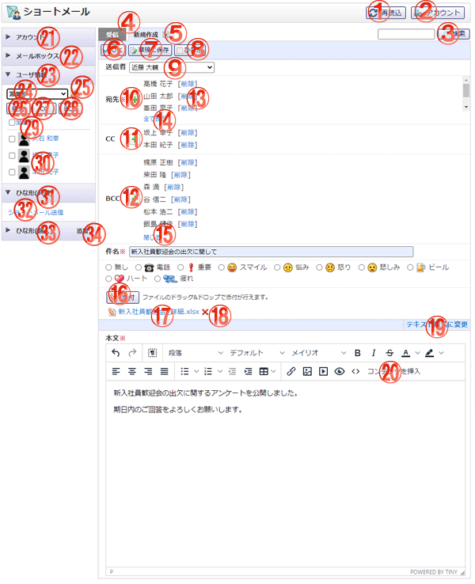

ショートメールを作成する画面です。

機能説明
再読込ボタンショートメール一覧を再読込します。再読込が終了すると選択されているメールボックスのショートメール一覧を表示します。 |
アカウントボタン個人設定のアカウントの管理画面へ遷移します。 |
|---|---|
検索ボタン入力されたキーワードを元に詳細検索画面へ遷移します。 |
メールボックス切り替え表示されているメールボックスのショートメール一覧が表示されます。 |
メール削除ボタン作成中のメールの削除確認画面がポップアップで表示されます。削除確認画面で「はいボタン」をクリックすると作成中のメールが削除されます。 |
OKボタンショートメール 新規作成確認画面へ遷移します。入力内容に不備がある場合エラーメッセージが表示されます。 |
草稿に保存ボタンショートメールを草稿として登録し、登録完了画面へ遷移します。入力内容に不備がある場合エラーメッセージが表示されます。 |
ひな形ボタンひな形選択画面がポップアップで表示されます。 |
差出人コンボ差出人を変更することが出来ます。
|
宛先選択ボタン宛先選択ポップアップを表示します。 |
CC選択ボタンCCの宛先選択ポップアップを表示します。 |
BCC選択ボタンBCCの宛先選択ポップアップを表示します。 |
削除ボタン宛先に選択されたユーザを削除することが出来ます。
|
全て表示ボタンCCに選択されたユーザ一覧を全て表示することが出来ます。
|
閉じるボタンBCCに選択されたユーザ一覧の全て表示状態をスクロール表示にすることが出来ます。
|
添付ボタンフォルダウィンドウが開きます。フォルダウィンドウでファイルを選択すると、添付ボタンの下にファイル名が表示されます。 |
ファイル名ファイルをダウンロードします。 |
削除アイコンファイルを削除します。 |
HTML形式に変更・テキスト形式に変更リンク内容の入力形式をテキスト形式からHTML形式、またはHTML形式からテキスト形式に変更できます。 |
コンテンツを挿入ボタンフォルダウィンドウが開きます。画像ファイルを選択すると内容に選択した画像が挿入されます。 |
アカウント一覧切り替えクリックするとアカウント一覧が表示されます。
|
メールボックス一覧切り替えクリックするとメールボックス一覧が表示されます。
|
ユーザ情報詳細切り替えクリックするとユーザ情報詳細が表示されます。
|
グループコンボグループを選択します。 |
グループボタングループ選択ポップアップを表示します。 |
宛先ボタンチェックボックスで選択したユーザを宛先に設定し、作成画面に反映します。 |
CCボタンチェックボックスで選択したユーザをCCに設定し、作成画面に反映します。 |
BCCボタンチェックボックスで選択したユーザをBCCに設定し、作成画面に反映します。 |
全選択チェックボックスチェックをつけると、全てのユーザのチェックボックスにチェックが付きます。チェックを外すと、全てのユーザのチェックボックスのチェックが外れます。 |
ユーザ名選択したユーザを宛先に設定し、新規作成画面を開きます。 |
ひな形（共通）一覧切り替えクリックするとひな形（共通）一覧が表示されます。
|
ひな形名選択したひな形を作成画面に反映します。 |
ひな形(個人)一覧切り替えクリックするとひな形(個人)一覧が表示されます。 |
ひな形追加ボタンひな形一覧画面へ遷移します。 |
表示・入力項目説明
差出人
差出人を選択します。
宛先・CC・BCC
宛先・CC・BCC選択画面で選択したユーザ名が表示されます。
件名
件名を入力します（70文字以内）。
マーク
マークを選択します。
本文
本文を入力します（2,000文字以内）。